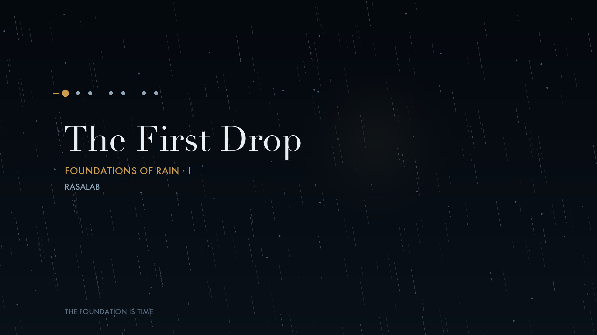
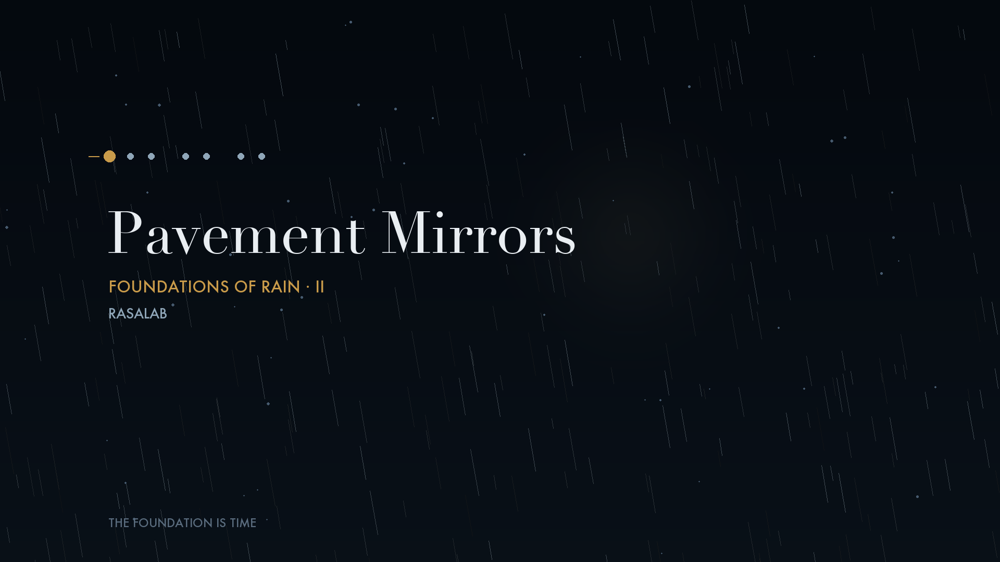

An instrumental music brand built on Indian rhythmic cycles — tala as landscape, not decoration — carrying jazz, chamber, cinema and prog as fellow travellers, never as costume.
AK.RasaLabs is not attempting to fuse cultures. It is attempting to discover a musical language that never existed before.
The foundation is not the sitar, the sarangi, or the tanpura. The foundation is time — the way Indian music has always understood it: a tala not as a rhythm to count, but as a landscape to inhabit. Everything else — jazz harmony, chamber orchestration, cinematic scale, progressive form — is allowed to wander, provided every journey eventually returns to the cycle.
Original instrumental compositions, released as ninе‑piece series across a year — three singles a week, reimagined at each series' close as one uninterrupted listening experience. A weekly Recast strand runs alongside, reinterpreting genuinely public‑domain traditional compositions in the same language.
The first monsoon arrives. Cities soften. Pavement reflects the sky. Conversations slow. Nine chapters that quietly answer one question — what does AK.RasaLabs sound like — without ever stating the answer directly.

The instant before recognition, when the season has already begun but the city has not yet understood it.

The streets begin collecting reflections. Wonder arrives through observation rather than surprise.
Full pieces publish on YouTube. Short-form previews and behind-the-language notes live on Instagram.